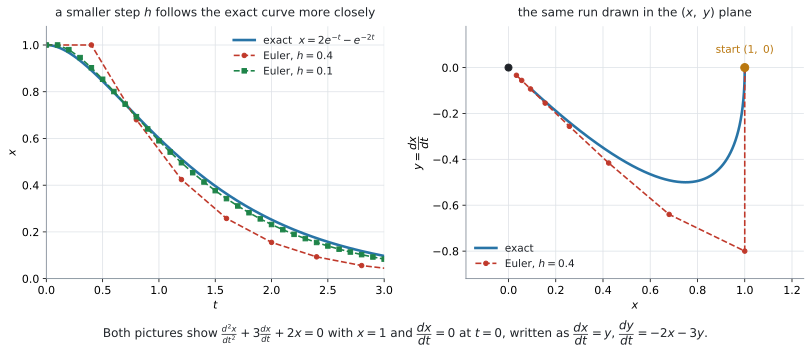
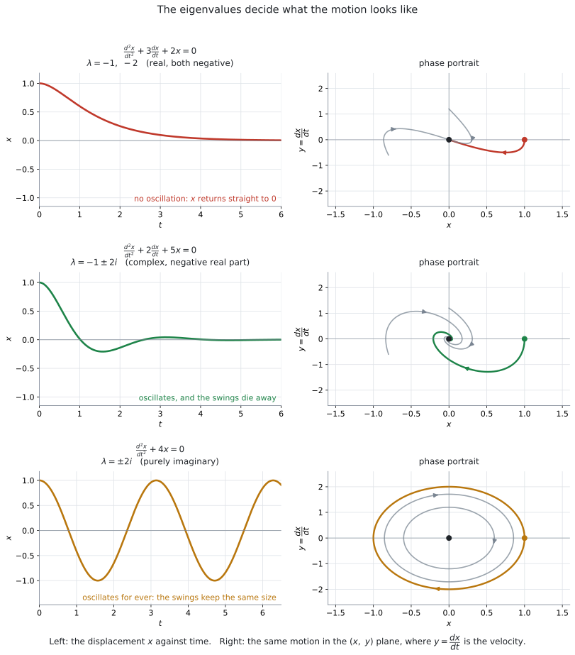

AHL 5.18 — Second order differential equations（2階微分方程式）
- \(\dfrac{d^{2}x}{dt^{2}} = f\!\left(x,\ \dfrac{dx}{dt},\ t\right)\) を、\(y = \dfrac{dx}{dt}\) とおいて連立1階に書きかえられる。
- 書きかえた系に Euler 法を使い、表を作って進められる（AHL 5.16b）。
- \(\dfrac{d^{2}x}{dt^{2}} + a\dfrac{dx}{dt} + bx = 0\) を行列の形に書き、eigenvalue（固有値）を求められる。
- 実で異なる固有値のとき、厳密解を書き、初期条件から定数を決められる（AHL 5.17a）。
- 固有値の型から、振動するかどうかとおさまるかどうかを言える。
- phase portrait（相図）の縦軸が速度であることを説明できる。
これまでのページで扱ってきたのは、1階の微分方程式でした。
このページで出てくるのは、\(\dfrac{d^{2}x}{dt^{2}}\) という2階の式です。そのままでは、どちらの方法も使えません。
そこで、\(y = \dfrac{dx}{dt}\) とおきます。 これだけで、2階の式が連立1階に変わり、上の \(2\) つがそのまま使えるようになります。
シラバスも、この書きかえを名指ししています。
Write as coupled first order equations \(\dfrac{dx}{dt} = y\) and \(\dfrac{dy}{dt} = f(x,\ y,\ t)\).
新しい公式も、新しい電卓機能もありません。 覚えることは、この一手だけです。
AI HL の公式集は 5.17 で終わっています。 5.18 の欄は印刷されていません。
使うのは、すでにある \(2\) つです。
- 5.16 の欄（\(2\) つ目）… 連立系の Euler 法
- 5.17 の欄 … 連立系の厳密解 \(\mathbf{x} = A\mathbf{p}_1 e^{\lambda_1 t} + B\mathbf{p}_2 e^{\lambda_2 t}\)
書きかえたあとは、いつもの \(2\) つというわけです。
ただし、\(\det(M - \lambda I) = 0\) は公式集に載っていません（AHL 5.17b）。これは覚えておく必要があります。
The idea
1. 2階の式は、そのままでは進められません
たとえば、ばねにつるしたおもりの動きは
\[ \frac{d^{2}x}{dt^{2}} + 3\frac{dx}{dt} + 2x = 0 \tag{1}\]
のような式で表されます。\(x\) は「つりあいの位置からのずれ」、\(t\) は時刻です。
Euler 法は、この式には使えません。 AHL 5.16a の公式は
\[ y_{n+1} = y_n + h \times f(x_n,\ y_n) \]
でした。このページでは、動く量が \(x\)、独立変数が時刻 \(t\) です。 ですから文字を \(y \to x\)、\(x \to t\) と読みかえます。
\[ x_{n+1} = x_n + h \times f(x_n,\ t_n) \]
右辺に要るのは \(\dfrac{dx}{dt}\) です。ところが上の式が教えてくれるのは \(\dfrac{d^{2}x}{dt^{2}}\) のほうで、\(\dfrac{dx}{dt}\) そのものは書かれていません。
そこで、\(\dfrac{dx}{dt}\) にも名前を付けて、いっしょに追いかけます。
2. \(y = \dfrac{dx}{dt}\) とおくと、連立1階になります
\(\dfrac{dx}{dt}\) を \(y\) と呼ぶことにします。
\[ y = \frac{dx}{dt} \tag{2}\]
すると \(2\) 本の式が手に入ります。
\(1\) 本目は、いま決めたことをそのまま書いたものです。
\[ \frac{dx}{dt} = y \]
\(2\) 本目は、もとの2階の式です。\(\dfrac{d^{2}x}{dt^{2}}\) は「\(\dfrac{dx}{dt}\) の微分」、つまり \(\dfrac{dy}{dt}\) ですから
\[ \frac{d^{2}x}{dt^{2}} = \frac{d}{dt}\!\left(\frac{dx}{dt}\right) = \frac{dy}{dt} \]
と置きかえられます。まとめると
\[ \boxed{\ \frac{d^{2}x}{dt^{2}} = f\!\left(x,\ \frac{dx}{dt},\ t\right) \quad \Longrightarrow \quad \frac{dx}{dt} = y, \qquad \frac{dy}{dt} = f(x,\ y,\ t)\ } \tag{3}\]
これで、\(x\) と \(y\) の連立1階になりました。 ここから先は AHL 5.16b と AHL 5.17a の内容です。
書きかえの手順は \(3\) つです
- \(y = \dfrac{dx}{dt}\) とおき、\(1\) 本目に \(\dfrac{dx}{dt} = y\) と書く
- もとの式を \(\dfrac{d^{2}x}{dt^{2}} = \ldots\) の形に直す
- 右辺の \(\dfrac{dx}{dt}\) をすべて \(y\) に書きかえ、左辺を \(\dfrac{dy}{dt}\) にする
式 1 でやってみます。まず \(\dfrac{d^{2}x}{dt^{2}} = -2x - 3\dfrac{dx}{dt}\) と直し、\(\dfrac{dx}{dt}\) を \(y\) にします。
\[ \frac{dx}{dt} = y, \qquad \frac{dy}{dt} = -2x - 3y \tag{4}\]
\(y = \dfrac{dx}{dt}\) は、\(x\) が変わる速さです。ばねの問題なら、おもりの速度そのものです。
ですから、初期条件は \(2\) つ必要です。「どこにいるか」（\(x\) の値）だけでは足りず、「どちらへどれくらいの速さで動いているか」（\(y\) の値）も要ります。
たとえば released from rest（静かに手をはなす）と書かれ、そのときの位置が \(x = 1\) なら
\[ x = 1, \qquad y = 0 \qquad (t = 0) \]
です。from rest（静止した状態から）は \(y = 0\) という意味です。
\(y\) は「もう \(1\) つの量」ではなく、\(x\) の導関数に付けた名前です。ですから \(x\) と \(y\) は独立ではありません。
このことは、答えを見ると分かります。\(x\) の式が出たら、\(y\) はそれを微分したものになっているはずです。そこが検算になります。
3. Euler 法は、5.16b のままです
書きかえてしまえば、使う公式は AHL 5.16b の公式集の欄そのままです。
\[ x_{n+1} = x_n + h \times y_n \]
\[ y_{n+1} = y_n + h \times f_2(x_n,\ y_n,\ t_n) \]
\[ t_{n+1} = t_n + h \]
\(1\) 本目の右辺が \(y_n\) になっているところが、このページらしいところです。\(f_1(x,\ y,\ t) = y\) だからです。\(f_2\) のほうは、もとの \(2\) 階の式の右辺 \(f\) そのものです。
\(y_{n+1}\) を計算するときに使うのは、\(x_n\) と \(y_n\)（古い値）です。さきに求めた \(x_{n+1}\) を入れてはいけません（AHL 5.16b）。
\(1\) 行ぶんを全部そろえてから、次の行へ進みます。
式 4 を、\(x = 1\)、\(y = 0\)、\(h = 0.1\) から \(1\) 歩進めてみます。
\[ x_1 = 1 + 0.1 \times 0 = 1 \]
\[ y_1 = 0 + 0.1 \times (-2 \times 1 - 3 \times 0) = -0.2 \]
\(t = 0.1\) のとき \(x \approx 1\)、\(y \approx -0.2\) です。位置はまだほとんど動いていませんが、速度は負になりました。 おもりが動きはじめたところです。

図 1 の左を見てください。\(h\) を小さくするほど、Euler 法の折れ線は本当の曲線に近づきます（AHL 5.16a）。右は、そのうち \(h = 0.4\) の計算を \((x,\ y)\) 平面に描いたものです。
4. \(\dfrac{d^{2}x}{dt^{2}} + a\dfrac{dx}{dt} + bx = 0\) を行列にする
シラバスは、\(2\) 階の式のうちこの形を名指ししています。
Solutions of \(\dfrac{d^{2}x}{dt^{2}} + a\dfrac{dx}{dt} + bx = 0\) can also be investigated using the phase portrait method in AHL 5.17 above.
書きかえると
\[ \frac{dx}{dt} = y, \qquad \frac{dy}{dt} = -bx - ay \]
です。右辺が \(ax + by\) の形（\(x\) と \(y\) の項だけで、定数項も \(t\) もありません）なので、AHL 5.17a の方法がそのまま使えます。行列に書くと
\[ \frac{d\mathbf{x}}{dt} = M\mathbf{x}, \qquad M = \begin{pmatrix} 0 & 1 \\ -b & -a \end{pmatrix} \tag{5}\]
となります。
\(M\) の \(1\) 行目は \(\dfrac{dx}{dt} = y\) を表しています。\(x\) の係数が \(0\)、\(y\) の係数が \(1\) なので、どんな \(a\)、\(b\) でも \((0,\ 1)\) です。
変わるのは \(2\) 行目だけで、もとの式の係数の符号を変えて並べます。
\[ \frac{d^{2}x}{dt^{2}} + 3\frac{dx}{dt} + 2x = 0 \quad \Longrightarrow \quad M = \begin{pmatrix} 0 & 1 \\ -2 & -3 \end{pmatrix} \]
\(-2\) が \(x\) の係数、\(-3\) が \(\dfrac{dx}{dt}\) の係数から来ています。順番が入れかわるので、気をつけてください。
5. 実で異なる固有値のときは、厳密解が書けます
あとは AHL 5.17a のとおりです。\(\det(M - \lambda I) = 0\) から固有値を出し、公式集の式にあてはめます。
\[ \mathbf{x} = A\mathbf{p}_1 e^{\lambda_1 t} + B\mathbf{p}_2 e^{\lambda_2 t} \]
この形の \(M\) には、うれしい性質があります。
\(M = \begin{pmatrix} 0 & 1 \\ -b & -a \end{pmatrix}\) の固有値 \(\lambda\) に対する eigenvector は
\[ \mathbf{p} = \binom{1}{\lambda} \tag{6}\]
です。\((M - \lambda I)\mathbf{p} = \mathbf{0}\) の \(1\) 行目が \(-\lambda p_1 + p_2 = 0\)、つまり \(p_2 = \lambda p_1\) になるからです。
\(\lambda\) を求めたら、eigenvector はもう書けています。 検算にも使えます。
したがって
\[ x = Ae^{\lambda_1 t} + Be^{\lambda_2 t}, \qquad y = A\lambda_1 e^{\lambda_1 t} + B\lambda_2 e^{\lambda_2 t} \tag{7}\]
です。\(y\) は \(x\) を微分したものになっています。 式 2 のとおりで、これが検算になります。
\(A\) と \(B\) は、\(t = 0\) の \(2\) つの条件から決めます。
\[ x(0) = A + B, \qquad y(0) = A\lambda_1 + B\lambda_2 \]
複素数の固有値でも、解の式そのものは存在します。ただし、この課程では求められていません。 シラバスは、AHL 5.17a でこう限定しています。
Calculation of exact solutions is only required for the case of real distinct eigenvalues.
固有値が複素数のときは、式を書くのではなく絵で読みます（AHL 5.17b・第6節）。
固有値が重解（\(\lambda_1 = \lambda_2\)）になる場合は、この課程では出題されません。 シラバスの AHL 5.17 に、こう書かれているからです。
Systems will have distinct, non-zero, eigenvalues.
6. 固有値の型で、動き方が決まります
\(M\) の特性方程式は
\[ \det(M - \lambda I) = \lambda^{2} + a\lambda + b = 0 \tag{8}\]
です。ですから、\(a\) と \(b\) を見れば、動き方の見当がつきます。 判別式を
\[ \Delta = a^{2} - 4b \]
とおきます。解の公式から
\[ \lambda = \frac{-a \pm \sqrt{\Delta}}{2} \tag{9}\]
ですから、\(\Delta < 0\) のとき、\(2\) つの固有値の実部はどちらも \(-\dfrac{a}{2}\) です。

| \(a\) と \(b\) | 固有値 | 動き方 | 図 |
|---|---|---|---|
| \(a > 0\)、\(b > 0\)、\(\Delta > 0\) | 実で異なる、両方負 | 振動せずに \(0\) へ戻る | 上の行 |
| \(a > 0\)、\(b > 0\)、\(\Delta < 0\) | 複素数、実部が負 | 振動しながら \(0\) へ戻る | 中の行（AHL 5.17b） |
| \(a = 0\)、\(b > 0\) | 純虚数 | 振動が続く（大きさが変わらない） | 下の行（AHL 5.17b） |
| \(a < 0\)、\(b > 0\)、\(\Delta < 0\) | 複素数、実部が正 | 振動しながら大きくなる | AHL 5.17b |
| \(b < 0\) | 実で異なる、異符号 | 離れていく（saddle point） | AHL 5.17a |
ばねの問題なら、\(a\dfrac{dx}{dt}\) の項は速さに比例してじゃまをする力（空気の抵抗のような、速さに比例する抵抗）を表しています。
境目は \(\Delta = a^{2} - 4b = 0\)、つまり \(a = 2\sqrt{b}\) です（\(b > 0\) のとき）。
- \(a = 0\) … じゃまがないので、いつまでも揺れ続けます（図 2 の下の行）
- \(0 < a < 2\sqrt{b}\)（\(\Delta < 0\)）… 揺れながら、だんだんおさまります（中の行）
- \(a > 2\sqrt{b}\)（\(\Delta > 0\)）… 揺れる前におさまります（上の行）
\(2\) 階の式を、自分で立てる必要はありません（\(1\) 階の式をことばから立てる問題は AHL 5.14 で出ます）。シラバスにこう書かれています。
Understanding the occurrence of simple second order differential equations in physical phenomena would aid understanding but in examinations the equation will be given.
問われるのは、与えられた式を書きかえて、解いて、動きを言葉で説明するところです。
overdamped のような英語は、この課程の用語ではありません
物理では、上の表の \(1\) 行目を overdamped、\(2\) 行目を underdamped と呼びます。ただし、AI HL のシラバスにはこれらの語はありません。
答案では、\(\lambda\) の型と、動きの言葉で書いてください。
試験ではこう書く
The eigenvalues are real and both negative, so \(x\) returns to \(0\) without oscillating.
The eigenvalues are complex with negative real part, so \(x\) oscillates with decreasing amplitude and tends to \(0\).
7. phase portrait の縦軸は「速度」です
図 2 の右の列が phase portrait です。上の行が AHL 5.17a、中と下の行が AHL 5.17b と同じ絵ですが、この項目では縦軸に意味があります。
- 横軸 \(x\) … いまの位置
- 縦軸 \(y = \dfrac{dx}{dt}\) … いまの速度
ですから、絵の読み方も具体的になります。
| 絵の場所 | 意味 |
|---|---|
| \(x\) 軸を横切る（\(y = 0\)） | 速度が \(0\)。折り返す瞬間です |
| \(y\) 軸を横切る（\(x = 0\)） | つりあいの位置を通過する瞬間 |
| 原点 | 動かずに止まっている状態 |
| 原点に近づく | おさまっていく |
閉じた輪（下の行）は、同じ動きがくり返されることを表しています。開いて原点に巻きつく渦は、くり返しながら小さくなっていくことを表しています。
8. スプレッドシートで
シラバスの Use of technology に、こう書かれています。
Use of spreadsheets to generate values.
列は \(3\) つ（\(t\)、\(x\)、\(y\)）で足ります。\(1\) 本目の式が \(\dfrac{dx}{dt} = y\) なので、\(x\) の列は「\(1\) つ上の \(x\) に \(h \times\)（\(1\) つ上の \(y\)）を足すだけ」です。やり方は GDC 第1節にあります。
Why it works
なぜ書きかえてよいのか
\(y = \dfrac{dx}{dt}\) とおいたとき、\(2\) 本の式はもとの式と同じことを言っています。
連立系の解 \((x,\ y)\) があったとします。\(1\) 本目から \(y = \dfrac{dx}{dt}\) なので、\(2\) 本目の左辺 \(\dfrac{dy}{dt}\) は \(\dfrac{d^{2}x}{dt^{2}}\) です。ですから \(2\) 本目は
\[ \frac{d^{2}x}{dt^{2}} = f\!\left(x,\ \frac{dx}{dt},\ t\right) \]
と同じ式になります。逆向きも同じです。 もとの式の解 \(x\) に対して \(y = \dfrac{dx}{dt}\) と決めれば、\(2\) 本ともみたされます。
情報が増えても減ってもいません。 名前を \(1\) つ増やして、\(2\) 階を \(1\) 階に「ならした」だけです。
なぜ行列が \(\begin{pmatrix} 0 & 1 \\ -b & -a \end{pmatrix}\) になるのか
\(\dfrac{d^{2}x}{dt^{2}} + a\dfrac{dx}{dt} + bx = 0\) を \(\dfrac{d^{2}x}{dt^{2}} = \ldots\) の形にすると
\[ \frac{d^{2}x}{dt^{2}} = -a\frac{dx}{dt} - bx \]
です。\(\dfrac{dx}{dt}\) を \(y\) に書きかえて
\[ \frac{dy}{dt} = -bx - ay \]
となります。\(x\) の係数が \(-b\)、\(y\) の係数が \(-a\)。 これが行列の \(2\) 行目です。\(1\) 行目は \(\dfrac{dx}{dt} = 0 \cdot x + 1 \cdot y\) なので \((0,\ 1)\) です。
特性方程式が、もとの式とそっくりになります
\(M = \begin{pmatrix} 0 & 1 \\ -b & -a \end{pmatrix}\) について
\[ \det(M - \lambda I) = \begin{vmatrix} -\lambda & 1 \\ -b & -a-\lambda \end{vmatrix} = (-\lambda)(-a-\lambda) - (1)(-b) = \lambda^{2} + a\lambda + b \]
です。もとの式で \(\dfrac{d^{2}x}{dt^{2}} \to \lambda^{2}\)、\(\dfrac{dx}{dt} \to \lambda\)、\(x \to 1\) と置きかえたものと同じ形になっています。
これは検算に使ってください。 答案には、まず \(M\) を書きます。\(M\) を書かずに \(\lambda^{2} + a\lambda + b = 0\) から始めると、どこから出したのかが読めません。
\(M\) を書いたあとは、AHL 5.17a のとおり、\(\det(M - \lambda I) = 0\) か、\(\lambda^{2} - (\text{対角の和})\lambda + \det M = 0\) のどちらで進めても構いません。ただし Find the eigenvalues と問われたときは、\(\det(M - \lambda I) = 0\) の行を残すのが確実です。
Worked examples
問題文は英語です。意味が理解できなかったら、問題文の下の「日本語訳」を開いてください。解説は日本語です。
例題 1 The displacement \(x\) of a mass on a spring, at time \(t\) seconds, satisfies
\[ \frac{d^{2}x}{dt^{2}} + 3\frac{dx}{dt} + 2x = 0 \]
The mass is released from rest at \(x = 1\), so that \(x = 1\) and \(\dfrac{dx}{dt} = 0\) when \(t = 0\).
(a) Write the equation as two coupled first order differential equations.
(b) Use Euler’s method with a step length of \(h = 0.1\) to find approximations for \(x\) and \(\dfrac{dx}{dt}\) when \(t = 0.2\).
(c) Interpret your value of \(\dfrac{dx}{dt}\) when \(t = 0.2\) in the context of the motion.
日本語訳
ばねにつるしたおもりの、時刻 \(t\) 秒における変位 \(x\) は、上の式をみたします。
displacement は「変位」、released from rest は「静止した状態から手をはなす」、step length は「刻み幅」という意味です。
おもりは \(x = 1\) の位置で静かにはなされます。つまり \(t = 0\) のとき \(x = 1\)、\(\dfrac{dx}{dt} = 0\) です。
(a) この式を、\(2\) 本の連立1階微分方程式として書きなさい。
(b) 刻み幅 \(h = 0.1\) の Euler 法を使って、\(t = 0.2\) のときの \(x\) と \(\dfrac{dx}{dt}\) の近似値を求めなさい。
(c) \(t = 0.2\) のときの \(\dfrac{dx}{dt}\) の値を、運動の文脈で解釈しなさい。
(a) \(y = \dfrac{dx}{dt}\) とおきます（第2節）。もとの式を \(\dfrac{d^{2}x}{dt^{2}} = -2x - 3\dfrac{dx}{dt}\) と直し、\(\dfrac{dx}{dt}\) を \(y\) にします。
\[ \frac{dx}{dt} = y, \qquad \frac{dy}{dt} = -2x - 3y \]
(b) \(2\) 歩です。まず表を作ります（AHL 5.16a）。\(1\) 行ぶんを全部そろえてから、次の行へ進みます（第3節）。
| \(n\) | \(t_n\) | \(x_n\) | \(y_n\) |
|---|---|---|---|
| \(0\) | \(0\) | \(1\) | \(0\) |
| \(1\) | \(0.1\) | \(1\) | \(-0.2\) |
| \(2\) | \(0.2\) | \(0.98\) | \(-0.34\) |
計算は、こうです。
\(n = 0\)： \(t_0 = 0\)、\(x_0 = 1\)、\(y_0 = 0\)
\[ x_1 = 1 + 0.1 \times 0 = 1 \]
\[ y_1 = 0 + 0.1 \times (-2 \times 1 - 3 \times 0) = -0.2 \]
\(n = 1\)： \(t_1 = 0.1\)、\(x_1 = 1\)、\(y_1 = -0.2\)
\[ x_2 = 1 + 0.1 \times (-0.2) = 0.98 \]
\[ y_2 = -0.2 + 0.1 \times (-2 \times 1 - 3 \times (-0.2)) = -0.2 + 0.1 \times (-1.4) = -0.34 \]
\(t = 0.2\) のとき \(x \approx 0.98\)、\(\dfrac{dx}{dt} \approx -0.34\) です。
検算。 \(y_2\) の計算に使ったのは \(x_1 = 1\) と \(y_1 = -0.2\) で、\(x_2 = 0.98\) ではありません ✓
(c) \(\dfrac{dx}{dt}\) は速度です（第2節）。
試験ではこう書く
The value \(\dfrac{dx}{dt} \approx -0.34\) is the velocity of the mass. It is negative, so at \(t = 0.2\) the mass is moving back towards \(x = 0\), and it is doing so at about \(0.34\) units per second.
（\(\dfrac{dx}{dt} \approx -0.34\) はおもりの速度である。負なので、\(t = 0.2\) ではおもりは \(x = 0\) のほうへ、毎秒 \(0.34\) ほどの速さで戻っている、という意味です。）
(a) \[ \frac{dx}{dt} = y, \qquad \frac{dy}{dt} = -2x - 3y \]
(b) \[ x_1 = 1, \qquad y_1 = -0.2 \] \[ x_2 = 0.98, \qquad y_2 = -0.34 \] \[ x \approx 0.98, \qquad \frac{dx}{dt} \approx -0.34 \quad (t = 0.2) \]
(c) \(\dfrac{dx}{dt} \approx -0.34\) is the velocity. It is negative, so the mass is moving back towards \(x = 0\) at \(t = 0.2\).
例題 2 For the same differential equation
\[ \frac{d^{2}x}{dt^{2}} + 3\frac{dx}{dt} + 2x = 0 \]
with \(x = 1\) and \(\dfrac{dx}{dt} = 0\) when \(t = 0\):
(a) Write the coupled system in the form \(\dfrac{d\mathbf{x}}{dt} = M\mathbf{x}\) and find the eigenvalues of \(M\).
(b) Hence find an exact expression for \(x\) in terms of \(t\).
(c) An Euler approximation with \(h = 0.1\) gives \(x \approx 0.98\) when \(t = 0.2\). Comment on this approximation.
日本語訳
同じ微分方程式について、\(t = 0\) のとき \(x = 1\)、\(\dfrac{dx}{dt} = 0\) とします。
Hence は「これを使って」、an exact expression は「厳密な式」という意味です。
(a) 連立系を \(\dfrac{d\mathbf{x}}{dt} = M\mathbf{x}\) の形に書き、\(M\) の固有値を求めなさい。
(b) これを使って、\(x\) を \(t\) の式で厳密に表しなさい。
(c) \(h = 0.1\) の Euler 法では、\(t = 0.2\) のとき \(x \approx 0.98\) となります。この近似について述べなさい。
(a) 第4節のとおりです。\(1\) 行目は \((0,\ 1)\)、\(2\) 行目は係数の符号を変えて並べます。
\[ M = \begin{pmatrix} 0 & 1 \\ -2 & -3 \end{pmatrix} \]
\[ \det(M - \lambda I) = \begin{vmatrix} -\lambda & 1 \\ -2 & -3-\lambda \end{vmatrix} = \lambda^{2} + 3\lambda + 2 = 0 \]
\[ (\lambda + 1)(\lambda + 2) = 0 \quad \Longrightarrow \quad \lambda_1 = -1, \qquad \lambda_2 = -2 \]
実で異なるので、厳密解が書けます（第5節）。
(b) eigenvector は \(\binom{1}{\lambda}\) です（式 6）。
\[ \mathbf{p}_1 = \binom{1}{-1}, \qquad \mathbf{p}_2 = \binom{1}{-2} \]
\[ \binom{x}{y} = A\binom{1}{-1}e^{-t} + B\binom{1}{-2}e^{-2t} \]
初期条件を入れます。\(t = 0\) で \(x = 1\)、\(y = 0\) なので
\[ A + B = 1, \qquad -A - 2B = 0 \]
\(2\) 本目から \(A = -2B\)。\(1\) 本目に入れて \(-2B + B = 1\)、つまり \(B = -1\)、\(A = 2\) です。
\[ x = 2e^{-t} - e^{-2t} \]
検算。 \(\dfrac{dx}{dt} = -2e^{-t} + 2e^{-2t}\) で、\(t = 0\) のとき \(-2 + 2 = 0\) ✓ また \(x(0) = 2 - 1 = 1\) ✓
(c) 厳密な値を出します。
\[ x(0.2) = 2e^{-0.2} - e^{-0.4} = 0.967 \]
試験ではこう書く
The exact value is \(x = 0.967\), while Euler’s method with \(h = 0.1\) gives \(x \approx 0.980\). The approximation is too large by about \(0.013\), which is about \(1.3\%\). Euler’s method uses the gradient at the start of each step, so over a curve that is bending it drifts away from the exact solution. Using a smaller step length would reduce the error.
（厳密な値は \(0.967\) で、\(h = 0.1\) の Euler 法は \(0.980\) を返す。約 \(0.013\)、\(1.3\%\) ほど大きい。Euler 法は各歩のはじめの傾きを使うので、曲がっている曲線ではずれていく。刻み幅を小さくすれば誤差は小さくなる、という意味です。）
(a) \[ M = \begin{pmatrix} 0 & 1 \\ -2 & -3 \end{pmatrix} \] \[ \det(M - \lambda I) = \lambda^{2} + 3\lambda + 2 = 0 \quad \Longrightarrow \quad \lambda = -1,\ -2 \]
(b) \[ \mathbf{p}_1 = \binom{1}{-1}, \qquad \mathbf{p}_2 = \binom{1}{-2} \] \[ A + B = 1, \qquad -A - 2B = 0 \quad \Longrightarrow \quad A = 2,\ B = -1 \] \[ x = 2e^{-t} - e^{-2t} \]
(c) The exact value is \(x = 0.967\), so Euler’s method overestimates by about \(0.013\). Euler’s method uses the gradient at the start of each step, so it drifts from a curve that is bending; a smaller \(h\) would reduce the error.
例題 3 A damped oscillation satisfies
\[ \frac{d^{2}x}{dt^{2}} + 2\frac{dx}{dt} + 5x = 0 \]
(a) Write the equation as a coupled system in matrix form and find the eigenvalues.
(b) Describe the motion of the oscillation.
(c) State, with a reason, whether an exact expression for \(x\) is required in this course.
日本語訳
ある減衰振動は、上の式をみたします。
damped oscillation は「減衰する振動」、Describe は「述べなさい」という意味です。
(a) この式を連立系として行列の形に書き、固有値を求めなさい。
(b) この振動の運動について述べなさい。
(c) この課程で \(x\) の厳密な式が必要かどうかを、理由を示して述べなさい。
(a)
\[ M = \begin{pmatrix} 0 & 1 \\ -5 & -2 \end{pmatrix} \]
\[ \det(M - \lambda I) = \lambda^{2} + 2\lambda + 5 = 0 \]
判別式は \(\Delta = 2^{2} - 4 \times 5 = -16 < 0\) なので、複素数です。
\[ \lambda = \frac{-2 \pm \sqrt{-16}}{2} = -1 \pm 2i \]
(b) 第6節の表の \(2\) 行目です。
試験ではこう書く
The eigenvalues are complex, so the motion oscillates. Their real part is \(-1\), which is negative, so the size of each swing decreases and \(x \to 0\) as \(t\) increases. In the phase portrait the trajectory spirals inwards to the origin.
（固有値が複素数なので振動する。実部が \(-1\) で負なので、揺れの大きさは小さくなり、\(t\) が増えると \(x \to 0\) になる。相図では、軌道が原点へ渦を巻いて入る、という意味です。）
(c) シラバスの限定を答えます。
試験ではこう書く
No. Exact solutions are only required when the eigenvalues are real and distinct. Here they are complex, so only a qualitative description of the motion is required.
（不要である。厳密解が求められるのは固有値が実で異なるときだけで、ここでは複素数なので、運動の定性的な説明だけでよい、という意味です。）
(a) \[ M = \begin{pmatrix} 0 & 1 \\ -5 & -2 \end{pmatrix} \] \[ \lambda^{2} + 2\lambda + 5 = 0 \quad \Longrightarrow \quad \lambda = -1 \pm 2i \]
(b) The eigenvalues are complex, so the motion oscillates. The real part \(-1\) is negative, so the swings get smaller and \(x \to 0\); the trajectory spirals in to the origin.
(c) No. Exact solutions are only required for real distinct eigenvalues, and here the eigenvalues are complex.
例題 4 A driven system satisfies
\[ \frac{d^{2}x}{dt^{2}} = \sin t - 0.5\frac{dx}{dt} - x \]
with \(x = 0\) and \(\dfrac{dx}{dt} = 1\) when \(t = 0\).
(a) Write the equation as two coupled first order differential equations.
(b) Use Euler’s method with \(h = 0.1\) to find approximations for \(x\) and \(\dfrac{dx}{dt}\) when \(t = 0.2\).
(c) Explain why the eigenvalue method cannot be used for this equation.
日本語訳
ある強制振動の系は、上の式をみたします。\(t = 0\) のとき \(x = 0\)、\(\dfrac{dx}{dt} = 1\) です。
driven system は「外から力を加えられている系」という意味です。
(a) この式を、\(2\) 本の連立1階微分方程式として書きなさい。
(b) \(h = 0.1\) の Euler 法を使って、\(t = 0.2\) のときの \(x\) と \(\dfrac{dx}{dt}\) の近似値を求めなさい。
(c) この式に固有値の方法が使えない理由を説明しなさい。
(a) \(y = \dfrac{dx}{dt}\) とおくだけです。右辺の \(t\) は、そのまま残します。
\[ \frac{dx}{dt} = y, \qquad \frac{dy}{dt} = \sin t - 0.5y - x \]
(b) 右辺に \(t\) があるので、\(t\) の値も使います（AHL 5.16b）。
\(n = 0\)： \(t_0 = 0\)、\(x_0 = 0\)、\(y_0 = 1\)
\[ x_1 = 0 + 0.1 \times 1 = 0.1 \]
\[ y_1 = 1 + 0.1 \times (\sin 0 - 0.5 \times 1 - 0) = 1 + 0.1 \times (-0.5) = 0.95 \]
\(n = 1\)： \(t_1 = 0.1\)、\(x_1 = 0.1\)、\(y_1 = 0.95\)
\[ x_2 = 0.1 + 0.1 \times 0.95 = 0.195 \]
\[ y_2 = 0.95 + 0.1 \times (\sin 0.1 - 0.5 \times 0.95 - 0.1) = 0.902 \]
\(t = 0.2\) のとき \(x \approx 0.195\)、\(\dfrac{dx}{dt} \approx 0.902\) です。
検算。 電卓は radian にしておきます。\(\sin 0.1 = 0.0998\) です。degree のままだと \(0.00175\) になり、答えが変わります。
(c) 第4節が使えるのは、右辺が \(ax + by\) の形のとき、つまり \(x\) と \(y\) の項だけでできているときです。定数項や \(t\) の項があると、この形になりません（AHL 5.17a）。
試験ではこう書く
The eigenvalue method applies to a system of the form \(\dfrac{dx}{dt} = ax + by\), \(\dfrac{dy}{dt} = cx + dy\), in which the right hand sides contain only \(x\) and \(y\). Here \(\dfrac{dy}{dt}\) contains the term \(\sin t\), which depends on \(t\), so the system cannot be written as \(\dfrac{d\mathbf{x}}{dt} = M\mathbf{x}\) and Euler’s method must be used instead.
（固有値の方法は、右辺が \(x\) と \(y\) だけでできている系に使える。ここでは \(\dfrac{dy}{dt}\) に \(t\) による項 \(\sin t\) があるので、\(\dfrac{d\mathbf{x}}{dt} = M\mathbf{x}\) の形に書けず、Euler 法を使うことになる、という意味です。）
(a) \[ \frac{dx}{dt} = y, \qquad \frac{dy}{dt} = \sin t - 0.5y - x \]
(b) \[ x_1 = 0.1, \qquad y_1 = 0.95 \] \[ x_2 = 0.195, \qquad y_2 = 0.902 \] \[ x \approx 0.195, \qquad \frac{dx}{dt} \approx 0.902 \quad (t = 0.2) \]
(c) The right hand side contains \(\sin t\), so the system is not of the form \(\dfrac{dx}{dt} = ax + by\), \(\dfrac{dy}{dt} = cx + dy\). It cannot be written as \(\dfrac{d\mathbf{x}}{dt} = M\mathbf{x}\), so eigenvalues cannot be used and Euler’s method is needed.
Common errors
誤り：\(\dfrac{d^{2}x}{dt^{2}} + 3\dfrac{dx}{dt} + 2x = 0\) から \(M = \begin{pmatrix} 0 & 1 \\ 2 & 3 \end{pmatrix}\) とする。
\(\dfrac{d^{2}x}{dt^{2}} = -2x - 3\dfrac{dx}{dt}\) と移項してから読むので、符号は反対になります（第4節）。
正しくは：\(M = \begin{pmatrix} 0 & 1 \\ -2 & -3 \end{pmatrix}\)。
誤り：\(M = \begin{pmatrix} 0 & 1 \\ -3 & -2 \end{pmatrix}\) とする。
\(2\) 行目は \(\dfrac{dy}{dt} = -bx - ay\) なので、左の欄が \(x\) の係数、右の欄が \(\dfrac{dx}{dt}\) の係数です。
正しくは：\(-2\)（\(x\) の係数）が左、\(-3\)（\(\dfrac{dx}{dt}\) の係数）が右です。
誤り：\(y_{n+1}\) を計算するときに、いま求めた \(x_{n+1}\) を入れる。
\(2\) 本の式は同じ瞬間の話なので、どちらの右辺にも \(x_n\) と \(y_n\)（古い値）を入れます（AHL 5.16b）。
正しくは：\(1\) 行ぶんをそろえてから、次の行へ進みます。
誤り：\(x(0)\) だけを使って \(A\) と \(B\) を決めようとする。
\(2\) 階の式なので、定数は \(A\) と \(B\) の \(2\) つあります。決めるには条件が \(2\) つ要ります。
正しくは：\(x(0) = A + B\) と \(\dfrac{dx}{dt}(0) = A\lambda_1 + B\lambda_2\) を連立させます（第5節）。
from rest を読み落とす
誤り：released from rest と書かれ、位置が \(x = 2\) の問題を、\(x(0) = 2\) だけと読む。
from rest（静止した状態から）は、速度が \(0\) という条件です。
正しくは：\(x(0) = 2\) と \(\dfrac{dx}{dt}(0) = 0\) の \(2\) つです（第2節）。
誤り：\(\lambda = -1 \pm 2i\) から \(x = Ae^{(-1+2i)t} + Be^{(-1-2i)t}\) と書く。
この式そのものが誤りというわけではありませんが、この課程では求められていません。 \(A\) と \(B\) が複素数になり、実数の \(x\) に直す作業はシラバスの範囲外です。
正しくは：振動するか、おさまるかを言葉で述べます（第6節）。
誤り：\(x\) の答えを出したあと、\(y\) を別に求めなおす。
\(y\) は \(\dfrac{dx}{dt}\) に付けた名前です。\(x\) が出たら、\(y\) はそれを微分したものです（第2節）。
正しくは：\(y = \dfrac{dx}{dt}\) を検算に使います。合っていなければ、\(A\) か \(B\) が違っています。
Using your GDC (TI-Nspire CX II)
Lists & Spreadsheet は Press-to-Test で止められていません（AHL 5.16a）。ここで説明する方法は、試験でもそのまま使えます。
\(3\) 列のスプレッドシートで進める
ctrl + doc → Add Lists & Spreadsheet例 1（\(h = 0.1\)）を例にします。
| セル | 入れるもの | 意味 |
|---|---|---|
A1 |
0 |
\(t_0\) |
B1 |
1 |
\(x_0\) |
C1 |
0 |
\(y_0\) |
A2 |
=a1+0.1 |
\(t_{n+1} = t_n + h\) |
B2 |
=b1+0.1*c1 |
\(x_{n+1} = x_n + h y_n\) |
C2 |
=c1+0.1*(-2*b1-3*c1) |
\(y_{n+1} = y_n + h f(x_n, y_n, t_n)\) |
A2、B2、C2 を選んで、下へコピーします。
menu → Data → Fillうまく選べないときは、列ごとに \(1\) つずつ Fill してください。結果は同じです。
B2 の式が、このページらしいところです
B2 は =b1+0.1*c1 です。\(x\) の列は、\(1\) つ上の \(y\) を足すだけになります。\(\dfrac{dx}{dt} = y\) だからです。
C2 の中に b2 を書いてはいけません。b1 です（AHL 5.16b）。
a1、b1、c1 です。a[] は列ぜんぶを指すので、ここでは使えません。
右辺に \(t\) があるときは、A 列を使います。例 4 なら
C2: =c1+0.1*(sin(a1)-0.5*c1-b1)です。角度の設定を radian にしておいてください。
固有値で場合分けを確かめる
menu → 7: Matrix & Vector → B: Advanced → 4: Eigenvalues\(\begin{pmatrix} 0 & 1 \\ -b & -a \end{pmatrix}\) を入れます。実数が \(2\) つ返れば厳密解が書け、複素数（i が付いた形）で返れば言葉で説明する問題です（第6節）。
Find the eigenvalues と問われたら、\(\det(M - \lambda I) = 0\) を書いて解く過程が要ります。電卓は検算に使ってください（AHL 5.17a）。
確かめ方
\(3\) つあります。
- \(y\) が \(x\) の導関数になっているか。 出した \(x\) を微分して、\(y\) と一致するか見ます（AHL 5.14）
- \(t = 0\) で初期条件に合うか。 \(x(0)\) と \(\dfrac{dx}{dt}(0)\) の \(2\) つとも確かめます
- \(h\) を半分にして、Euler 法の答えが大きく変わらないか
Exercises
各問題に、折りたたみが3つ付いています。日本語訳、解答例（答案用紙に書くべきこと。英語です）、解説（なぜそうなるか。日本語です）。
まず自分で解いて、次に解答例と見くらべてください。解説は、合わなかったときだけ開けば十分です。
1 Write \(\dfrac{d^{2}x}{dt^{2}} + 5\dfrac{dx}{dt} + 6x = 0\) as two coupled first order differential equations.
日本語訳
\(\dfrac{d^{2}x}{dt^{2}} + 5\dfrac{dx}{dt} + 6x = 0\) を、\(2\) 本の連立1階微分方程式として書きなさい。
\[ \frac{dx}{dt} = y, \qquad \frac{dy}{dt} = -6x - 5y \]
\(y = \dfrac{dx}{dt}\) とおきます。もとの式を \(\dfrac{d^{2}x}{dt^{2}} = -6x - 5\dfrac{dx}{dt}\) と直してから、\(\dfrac{dx}{dt}\) を \(y\) にします（第2節）。
符号に気をつけてください。 移項したので \(-6\) と \(-5\) です。
2 Write \(\dfrac{d^{2}x}{dt^{2}} = 4t - x - 2\dfrac{dx}{dt}\) as two coupled first order differential equations.
日本語訳
\(\dfrac{d^{2}x}{dt^{2}} = 4t - x - 2\dfrac{dx}{dt}\) を、\(2\) 本の連立1階微分方程式として書きなさい。
\[ \frac{dx}{dt} = y, \qquad \frac{dy}{dt} = 4t - x - 2y \]
すでに \(\dfrac{d^{2}x}{dt^{2}} = \ldots\) の形なので、\(\dfrac{dx}{dt}\) を \(y\) に書きかえるだけです。
\(4t\) はそのまま残します。 書きかえるのは \(\dfrac{dx}{dt}\) だけです。
この式は右辺に \(t\) があるので、固有値の方法は使えません（第4節）。Euler 法を使います。
3 Consider \(\dfrac{d^{2}x}{dt^{2}} + 4\dfrac{dx}{dt} + 3x = 0\), with \(x = 2\) and \(\dfrac{dx}{dt} = 0\) when \(t = 0\). Use Euler’s method with \(h = 0.1\) to find approximations for \(x\) and \(\dfrac{dx}{dt}\) when \(t = 0.2\).
日本語訳
\(\dfrac{d^{2}x}{dt^{2}} + 4\dfrac{dx}{dt} + 3x = 0\) を考えます。\(t = 0\) のとき \(x = 2\)、\(\dfrac{dx}{dt} = 0\) です。\(h = 0.1\) の Euler 法を使って、\(t = 0.2\) のときの \(x\) と \(\dfrac{dx}{dt}\) の近似値を求めなさい。
\[ \frac{dx}{dt} = y, \qquad \frac{dy}{dt} = -3x - 4y \] \[ x_1 = 2, \qquad y_1 = -0.6 \] \[ x_2 = 1.94, \qquad y_2 = -0.96 \] \[ x \approx 1.94, \qquad \frac{dx}{dt} \approx -0.96 \quad (t = 0.2) \]
\(n = 0\)： \(x_1 = 2 + 0.1 \times 0 = 2\)、\(y_1 = 0 + 0.1 \times (-3 \times 2 - 4 \times 0) = -0.6\)
\(n = 1\)： \(x_2 = 2 + 0.1 \times (-0.6) = 1.94\)、\(y_2 = -0.6 + 0.1 \times (-3 \times 2 - 4 \times (-0.6)) = -0.6 + 0.1 \times (-3.6) = -0.96\)
\(y_2\) に使うのは \(x_1 = 2\) です。 \(x_2 = 1.94\) ではありません（第3節）。
検算。 \(x\) は \(2\) から減り、\(y\) は負。おもりが \(x = 0\) のほうへ動きはじめている、という形になっています ✓
4 Write \(\dfrac{d^{2}x}{dt^{2}} + 5\dfrac{dx}{dt} + 6x = 0\) in the form \(\dfrac{d\mathbf{x}}{dt} = M\mathbf{x}\) and find the eigenvalues of \(M\).
日本語訳
\(\dfrac{d^{2}x}{dt^{2}} + 5\dfrac{dx}{dt} + 6x = 0\) を \(\dfrac{d\mathbf{x}}{dt} = M\mathbf{x}\) の形に書き、\(M\) の固有値を求めなさい。
\[ M = \begin{pmatrix} 0 & 1 \\ -6 & -5 \end{pmatrix} \] \[ \det(M - \lambda I) = \lambda^{2} + 5\lambda + 6 = 0 \] \[ (\lambda + 2)(\lambda + 3) = 0 \quad \Longrightarrow \quad \lambda = -2,\ -3 \]
\(1\) 行目は \((0,\ 1)\)、\(2\) 行目は \(-6\)（\(x\) の係数）と \(-5\)（\(\dfrac{dx}{dt}\) の係数）です（第4節）。
\[ \det(M - \lambda I) = (-\lambda)(-5-\lambda) - (1)(-6) = \lambda^{2} + 5\lambda + 6 \]
検算。 対角の和は \(-5\)、\(\det M\) は \(6\) です。\(\lambda_1 + \lambda_2 = -5\)、\(\lambda_1 \lambda_2 = 6\) になっています ✓
5 Using the eigenvalues from question 4, find an exact expression for \(x\) if \(x = 1\) and \(\dfrac{dx}{dt} = 0\) when \(t = 0\).
日本語訳
問題 4 で求めた固有値を使って、\(t = 0\) のとき \(x = 1\)、\(\dfrac{dx}{dt} = 0\) である場合の \(x\) を、厳密な式で求めなさい。
\[ \mathbf{p}_1 = \binom{1}{-2}, \qquad \mathbf{p}_2 = \binom{1}{-3} \] \[ \binom{x}{y} = A\binom{1}{-2}e^{-2t} + B\binom{1}{-3}e^{-3t} \] \[ A + B = 1, \qquad -2A - 3B = 0 \] \[ A = 3, \qquad B = -2 \] \[ x = 3e^{-2t} - 2e^{-3t} \]
eigenvector は \(\binom{1}{\lambda}\) です（式 6）。ですから \(\binom{1}{-2}\) と \(\binom{1}{-3}\)。
\[ \binom{x}{y} = A\binom{1}{-2}e^{-2t} + B\binom{1}{-3}e^{-3t} \]
\(t = 0\) を入れると \(A + B = 1\) と \(-2A - 3B = 0\)。\(2\) 本目から \(A = -\dfrac{3}{2}B\) で、\(1\) 本目に入れて \(B = -2\)、\(A = 3\) です。
検算。 \(\dfrac{dx}{dt} = -6e^{-2t} + 6e^{-3t}\) で、\(t = 0\) のとき \(-6 + 6 = 0\) ✓ \(x(0) = 3 - 2 = 1\) ✓
6 For each of the following, state whether \(x\) oscillates, and whether \(x \to 0\) as \(t\) increases. Give a reason in each case.
(a) \(\dfrac{d^{2}x}{dt^{2}} + 6\dfrac{dx}{dt} + 5x = 0\)
(b) \(\dfrac{d^{2}x}{dt^{2}} + \dfrac{dx}{dt} + 4x = 0\)
(c) \(\dfrac{d^{2}x}{dt^{2}} + 9x = 0\)
日本語訳
次のそれぞれについて、\(x\) が振動するかどうかと、\(t\) が増えるとき \(x \to 0\) になるかどうかを述べなさい。それぞれ理由も書きなさい。
(a) \(\lambda^{2} + 6\lambda + 5 = 0\) gives \(\lambda = -1,\ -5\): real and both negative. \(x\) does not oscillate, and \(x \to 0\).
(b) \(\lambda^{2} + \lambda + 4 = 0\) has discriminant \(1 - 16 = -15 < 0\), so the eigenvalues are complex with real part \(-\dfrac{1}{2}\). \(x\) oscillates, and \(x \to 0\).
(c) \(\lambda^{2} + 9 = 0\) gives \(\lambda = \pm 3i\): purely imaginary. \(x\) oscillates and does not tend to \(0\); the swings keep the same size.
表 1 を、そのまま使う問題です。\(\Delta = a^{2} - 4b\) の符号を見ます。
(a) \(\Delta = 36 - 20 = 16 > 0\)。実で異なり、和が \(-6\)、積が \(5\) なので両方負です。
(b) \(\Delta = 1 - 16 = -15 < 0\)。複素数で、実部は \(-\dfrac{a}{2} = -\dfrac{1}{2}\) です。
(c) \(a = 0\) なので、ブレーキがありません。純虚数になり、揺れが止まりません。
ここは固有値そのものを問われていないので、\(M\) を書かずに \(\lambda^{2} + a\lambda + b = 0\) から始めて構いません（Why it works）。Find the eigenvalues と問われたときは、\(M\) と \(\det(M - \lambda I) = 0\) の行を残してください。
試験ではこう書く
(a) Real distinct negative eigenvalues, so no oscillation and \(x \to 0\).
(b) Complex eigenvalues with negative real part, so \(x\) oscillates with decreasing amplitude and \(x \to 0\).
(c) Purely imaginary eigenvalues, so \(x\) oscillates with constant amplitude and does not tend to \(0\).
7 Consider \(\dfrac{d^{2}x}{dt^{2}} - x = 0\).
(a) Find the eigenvalues of the corresponding matrix \(M\).
(b) Describe what happens to \(x\) as \(t\) increases, for a starting point that is not the origin.
日本語訳
\(\dfrac{d^{2}x}{dt^{2}} - x = 0\) を考えます。
(a) 対応する行列 \(M\) の固有値を求めなさい。
(b) 原点でない点から出発したとき、\(t\) が増えると \(x\) がどうなるかを述べなさい。
(a) \[ M = \begin{pmatrix} 0 & 1 \\ 1 & 0 \end{pmatrix}, \qquad \det(M - \lambda I) = \lambda^{2} - 1 = 0 \] \[ \lambda = 1,\ -1 \]
(b) The eigenvalues are real with opposite signs, so the origin is a saddle point. The term in \(e^{t}\) grows, so for almost every starting point \(|x|\) increases without limit as \(t\) increases.
ここは \(a = 0\)、\(b = -1\) です。\(-b = 1\)、\(-a = 0\) なので
\[ M = \begin{pmatrix} 0 & 1 \\ 1 & 0 \end{pmatrix} \]
\(\Delta = a^{2} - 4b = 0 + 4 = 4 > 0\) で、\(\det M = b = -1 < 0\)。異符号なので saddle point です（表 1 のいちばん下の行）。
\(x = Ae^{t} + Be^{-t}\) の形になり、\(e^{t}\) の項が効いてきます。
試験ではこう書く
The eigenvalues \(1\) and \(-1\) have opposite signs, so the origin is a saddle point. The solution contains a term in \(e^{t}\), which grows, so \(|x|\) increases without limit as \(t\) increases.
これは「おさまらない」場合です。 \(b < 0\) だと、\(x\) を引き戻す向きの力がありません。
解答例が almost every と書いているのは、例外が \(1\) 本だけあるからです。\(\mathbf{p}_2 = \binom{1}{-1}\) の直線の上から出発したときは \(A = 0\) になり、\(x = Be^{-t} \to 0\) です（AHL 5.17a）。
saddle point では、この \(1\) 本だけが原点に入っていきます。
8 A phase portrait for \(\dfrac{d^{2}x}{dt^{2}} + a\dfrac{dx}{dt} + bx = 0\) is drawn with \(x\) on the horizontal axis and \(y = \dfrac{dx}{dt}\) on the vertical axis. A trajectory crosses the horizontal axis at the point \((0.4,\ 0)\). Interpret this crossing in terms of the motion.
日本語訳
\(\dfrac{d^{2}x}{dt^{2}} + a\dfrac{dx}{dt} + bx = 0\) の相図を、横軸 \(x\)、縦軸 \(y = \dfrac{dx}{dt}\) で描きます。ある軌道が、点 \((0.4,\ 0)\) で横軸を横切ります。この横切りを、運動の言葉で解釈しなさい。
On the horizontal axis \(y = \dfrac{dx}{dt} = 0\), so the velocity is zero. At that moment the object is at \(x = 0.4\) and is momentarily at rest, so it is turning round: it has stopped moving one way and is about to move the other way.
縦軸は速度です（第7節）。ですから横軸の上では \(y = 0\)、つまり速度が \(0\) です。
位置は \(x = 0.4\) で、そこで一瞬止まっています。折り返しの瞬間です。
試験ではこう書く
At this point \(\dfrac{dx}{dt} = 0\), so the object is momentarily at rest at \(x = 0.4\). It is the turning point of the motion: the object stops there and then moves back the other way.
「\(x = 0\) を通る瞬間」ではありません。 それは縦軸を横切るときの話です。
9 Explain why two initial conditions are needed to determine the motion described by \(\dfrac{d^{2}x}{dt^{2}} + a\dfrac{dx}{dt} + bx = 0\), whereas \(\dfrac{dx}{dt} = kx\) needs only one.
日本語訳
\(\dfrac{d^{2}x}{dt^{2}} + a\dfrac{dx}{dt} + bx = 0\) が表す運動を決めるには初期条件が \(2\) つ必要で、\(\dfrac{dx}{dt} = kx\) には \(1\) つで足りる理由を説明しなさい。
Writing \(y = \dfrac{dx}{dt}\) turns the second order equation into a system in two unknown functions, \(x\) and \(y\), so its general solution contains two arbitrary constants \(A\) and \(B\). Two conditions are needed to determine them. The equation \(\dfrac{dx}{dt} = kx\) has one unknown function and one arbitrary constant, so one condition is enough. Physically, knowing where the object is does not say how fast it is moving; both are needed.
Explain why なので、式の理由と、場面の理由の両方を書くと強い答案になります。
式のほうは、\(y = \dfrac{dx}{dt}\) とおくと未知の関数が \(2\) つになり、一般解に \(A\) と \(B\) の \(2\) つの定数が出ることです（第5節）。
場面のほうは、「どこにいるか」だけでは動きが決まらないことです。同じ位置でも、右へ動いているか左へ動いているかで、その先はまったく変わります（第2節）。
試験ではこう書く
Substituting \(y = \dfrac{dx}{dt}\) gives a system in two unknown functions, so the general solution has two arbitrary constants and two conditions are needed. In context, the position alone does not determine the motion: the velocity at that instant is also needed.
10 A student writes \(\dfrac{d^{2}x}{dt^{2}} + 7\dfrac{dx}{dt} + 12x = 0\) as \(\dfrac{d\mathbf{x}}{dt} = M\mathbf{x}\) with \(M = \begin{pmatrix} 0 & 1 \\ 7 & 12 \end{pmatrix}\). Identify the two errors and write down the correct matrix.
日本語訳
ある生徒が、\(\dfrac{d^{2}x}{dt^{2}} + 7\dfrac{dx}{dt} + 12x = 0\) を \(M = \begin{pmatrix} 0 & 1 \\ 7 & 12 \end{pmatrix}\) として \(\dfrac{d\mathbf{x}}{dt} = M\mathbf{x}\) の形に書きました。\(2\) つの誤りを指摘し、正しい行列を書きなさい。
First, the signs are wrong. Rearranging gives \(\dfrac{d^{2}x}{dt^{2}} = -12x - 7\dfrac{dx}{dt}\), so the entries are negative.
Second, the two entries are in the wrong order. The first column multiplies \(x\) and the second column multiplies \(y\), so \(-12\) comes first and \(-7\) second.
\[ M = \begin{pmatrix} 0 & 1 \\ -12 & -7 \end{pmatrix} \]
\(2\) 行目は \(\dfrac{dy}{dt} = -12x - 7y\) です（第4節）。
- 符号：移項するので、\(+12\) と \(+7\) が \(-12\) と \(-7\) になります
- 順番：左の欄が \(x\) の係数、右の欄が \(y\) の係数です。生徒は \(7\) と \(12\) を、もとの式に出てくる順に並べてしまっています
試験ではこう書く
The signs should be negative, because \(\dfrac{d^{2}x}{dt^{2}} = -12x - 7\dfrac{dx}{dt}\), and the entries should be in the order \(-12\) then \(-7\), since the first column multiplies \(x\) and the second multiplies \(y\). The correct matrix is \(M = \begin{pmatrix} 0 & 1 \\ -12 & -7 \end{pmatrix}\).
検算。 \(\det(M - \lambda I) = \lambda^{2} + 7\lambda + 12\) が、もとの式の係数とそろっていれば正しい行列です（Why it works）。\(\lambda = -3,\ -4\) です。